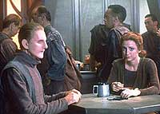
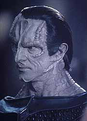
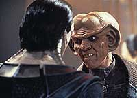
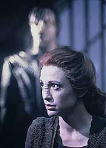
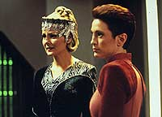

MANCHETE
DO EPISÓDIO
Melhor
episódio da temporada mostra
estação nos tempos da ocupação
Episódio
anterior | Próximo
episódio
Sinopse:
Data Estelar: 47282.5.
Em Bajor, numa casa sem energia para
iluminação, a Bajoriana Pallra, viúva do Bajoriano Vatrik,
contrata Quark para recuperar uma caixa guardada na antiga loja do
casal em Deep Space Nine.
Quark obtém a caixa, com o auxílio de Rom, mas não resiste à
curiosidade e acaba abrindo-a, descobrindo uma lista com oito
nomes Bajorianos. Pallra havia enviado um capanga, de nome Trazko,
para ficar
de olho em Quark e, como o Ferengi não pode viver para revelar os
nomes da lista, Trazko atira nele à queima-roupa e leva a caixa
consigo.
Enquanto Bashir tenta salvar a vida de Quark, Rom acaba
confessando a Odo sobre a caixa e a lista. Quando Odo ouve que
eles encontraram a caixa na antiga loja de Vatrik, cujo homicídio
(ocorrido cinco anos atrás) Odo nunca solucionou, sua mente volta
no tempo até o dia da morte de Vatrik e de como, no seu primeiro
encontro com gul Dukat, o Cardassiano o convocou para investigar a
morte do Bajoriano. No curso desta investigação (no passado),
Pallra aponta uma Bajoriana, que ela jura que estava tendo um caso
com seu marido. Seu nome: Kira Nerys.

A
mente de Odo volta ao presente e Rom acaba se lembrando de um nome
da lista: "algo parecido com Ches'so". Odo pede que Kira
tente obter alguma informação sobre tal Bajoriano, e ele acaba
por se lembrar que Kira naquela época negou ter matado Vatrik.
Odo vai a Bajor interrogar Pallra e ela nega saber qualquer coisa
sobre tal lista e não dá nenhuma explicação razoável sobre a
recente quitação da sua conta de energia. Kira traz informação
sobre "Ches'sarro" e diz que ele foi morto na noite
passada. Odo acha que Pallra foi responsável e se sente culpado.
Ele se lembra do seu primeiro encontro com Quark e de como ele
conseguiu tirar do Ferengi a informação de que este havia aceito
suborno de Kira pra fornecer um álibi a ela, exatamente na noite
em que Vatrik foi morto.
Através de suas investigações (no presente), envolvendo os
registros das comunicações e movimentações financeiras de
Pallra, Odo consegue reconstruir a lista e conclui que Pallra está
chantageando os Bajorianos com nomes na lista, pois todos eram
colaboradores no tempo da ocupação Cardassiana.
Ele se lembra de como Kira admitiu que, na noite do assassinato de
Vatrik, estava sabotando, sob o comando da resistência Bajoriana,
uma das instalações de mineração da estação, um crime punível
com a morte. Odo diz a Dukat simplesmente que ela não matou
Vatrik.

Quando
Trazko retorna à estação para tentar novamente matar Quark na
enfermaria, Odo o prende e, com as muitas conexões entre ele e
Pallra, coloca os dois "atrás das grades".
De volta ao escritório do comissário, Odo diz a Kira que agora
sabe que foi ela que matou Vatrik. Ela confessa que Vatrik a
surpreendeu enquanto ela procurava a lista na loja do Bajoriano, a
sua verdadeira missão para a resistência. Vatrik também era um
colaborador que servia de ligação direta entre Dukat e os demais
colaboradores.
Odo e Kira permanecem em silêncio pensando se o relacionamento
entre eles poderá permanecer o mesmo daqui pra frente.
Comentários:
Após duas semanas em baixa, DS9 volta com tudo: "Necessary
Evil" é um verdadeiro clássico!
Trazido ao mundo pela mesma dupla responsável por "Duet",
na temporada passada, James L. Conway e Peter Allan Fields, "Necessary
Evil" é o melhor episódio desta segunda temporada e um
dos melhores episódios de toda a série. É também, sem maiores
dúvidas, o melhor representante de "Trek Noir" da história
de Jornada.
Poucas coisas trouxeram tanta curiosidade aos fãs desta série
quanto os acontecimentos da época em que os Cardassianos ocupavam
Bajor, e DS9 era uma instalação de mineração chamada de Terok
Nor, comandada por gul Dukat. Neste episódio, "matamos a
fome" com relação ao tema, descobrindo fatos que nos ajudam
a entender melhor certos personagens e a dinâmica entre eles.

Envoltos
em uma atmosfera que lembra algo entre histórias policiais
antigas e o mais puro horror gótico, os personagens se vêem
imersos em uma trama extremamente complexa, com um número
interminável de pequenos e ricos detalhes, que "teimam"
em continuar surgindo mesmo em sucessivas assistidas, sem dúvida
qualidades de uma história destinada a vencer o teste do tempo,
que ao final emociona por tratar com propriedade, sinceridade e de
forma incisiva temas (relacionados entre si) como:
"acontecimentos marcantes compartilhados", "confiança
implícita" e "admiração, que se torna adoração".
A caracterização de Quark (passada e presente) é a melhor
apresentada até aqui para o personagem: suave, confiante, ele
deveria ser sempre caracterizado assim, não como um simples alívio
cômico.
É incrível como Rom pôde ser usado (sem nenhuma modificação)
dentro da sua caracterização de idiota, ser REALMENTE hilário e
não prejudicar a trama do episódio, pelo contrário, ajudá-la a
avançar. Um prodígio de todos os envolvidos!
Sisko também teve uma boa cena em que ele ajuda Odo a praticar a
tática do "policial bom/policial mau" com Rom.
A versão passada de Dukat não é nada diferente da versão
presente e meus comentários feitos em "Cardassians"
continuam valendo. Aqui novamente ele planeja salvar o próprio
rabo, fingindo (provavelmente até para si próprio) estar fazendo
alguma coisa nobre. A presença de Dukat em Terok Nor tem um palpável
poder.

Acho
que a mentira de Kira funcionou tão bem porque era, em grande
parte, verdade. Kira encontrou, nas mais desumanas e adversas
circunstâncias possíveis, o "homem mais decente que já
conhecera" e teve que mentir pra ele pra não ser executada.
Desde o instante em que Rom diz onde encontrou a caixa, percebemos
a REAL importância do caso Vatrik, e das circunstâncias que o
envolveram, na vida de Odo. Naquela passagem, ele foi chamado pela
primeira vez de "comissário" e teve seu primeiro
encontro com Dukat, que serviu de ponto de partida para o
relacionamento entre os dois, o mesmo para Quark e Kira. É
extremamente importante perceber como Odo mudou no curso da
investigação do caso Vatrik. Quando Dukat o convocou
inicialmente, ele era uma pessoa frágil, insegura, não conseguia
olhar ninguém nos olhos. Porém, à medida que a investigação
prosseguia ele ganhava mais confiança, indicando claramente de
onde veio o Odo do presente. aquela investigação o ajudou a
estabelecer quem ele é no Universo --através da sua função em
Terok Nor e depois em DS9.
Também é apresentada neste episódio a total capacidade de seus
inúmeros atributos: seus muitos talentos investigatórios, suas
agudas observações da condição humana (especialmente em três
maravilhosos "voice-overs"), sua incapacidade em julgar
as pessoas e seu ASSUMIDO papel de forasteiro
("outsider") e defensor da justiça. Ele encontrou, em
circunstâncias extremas, "a mulher mais decente que já
conhecera" e por um erro de julgamento pessoal não a mandou
para execução. Imaginem se as coisas tivessem sido um pouco
diferentes e se ele tivesse resolvido o caso Vatrik naquela época.
Provavelmente ele teria passado os últimos cinco anos visitando,
em uma certa data, uma certa sepultura em alguma parte de Bajor e
se lamentando por ser quem ele é.
A cena final entre Kira e Odo é uma das minhas favoritas de toda
a história de Jornada!

A
direção de James L. Conway é simplesmente sobrenatural (sem
falar nos cenários de Herman Zimmerman e na fotografia de Marvin
Hush) por conseguir transformar DS9 --REALMENTE-- na Terok Nor
daquela época (sem dúvida um marco na história de Jornada).
O trabalho de Conway é verdadeiramente artístico por utilizar os
cortes passado/presente de uma forma TOTALMENTE ligada
tematicamente. Tais cortes são feitos de uma forma tão fluida e
natural que o espectador se sente LITERALMENTE mergulhando na história.
A construção de paralelos entre as duas épocas é magistral,
indo o destaque para o contraponto entre as crianças brincando no
Promenade no presente, com as crianças, atrás da cerca,
esperando pelo retorno dos seus pais das minas, no passado. Isto
sem contar com uma direção de atores totalmente ACIMA DA MÉDIA.
Dentre os atores regulares, todos estiveram perfeitos, em especial
Nana Visitor e ainda mais Rene Auberjonois, que foi capaz de
construir duas diferentes e igualmente matadoras caracterizações
para as duas versões de seu personagem e introduzir incontáveis
nuances e detalhes (às vezes, mesmo sem diálogo) nestas duas
caracterizações. BRAVO!!!
Alaimo é Dukat, Dukat é Alaimo. Alaimo é mais dono do
personagem do que os produtores e roteiristas da série. Grodénchik
esteve melhor do que o usual. Moffat se saiu muito melhor aqui do
que em "The Game", seu personagem aqui não era NADA
trivial. MacKenzie não comprometeu.
E que tal a ambigüidade sobre o assassinato de Ches'saro? Será
que ele foi de fato morto pela viúva de Vatrik (como concluiu
Odo) ou será que ele foi morto por alguém da resistência
(daquela época) que soube dos acontecimentos recentes quando Kira
fez a sua pesquisa?
O único real problema do episódio é a falta de uma imediata
conseqüência para o relacionamento entre Odo e Kira, devido aos
acontecimentos do episódio, o que eu vou debitar, como usual, na
conta da série como um todo. Existe uma fala de Odo em "The
Collaborator", mais à frente nesta temporada, que PODE
ser interpretada como um comentário sobre os acontecimentos deste
episódio. Mais tarde, na quinta temporada da série, em
"Things Past", temos uma revisita (sob um certo
ponto-de-vista) aos temas deste episódio, só que com as posições
de Kira e Odo invertidas. É esperar pra ver.
"Necessary Evil" é "DS9 clássico" que
faz por Odo o que "Duet"
fez por Kira na temporada passada e faz dos dois (até aqui) os
personagens mais complexos e humanos desta série.
Citações
Odo - "My own very
adequate memory not being good enough for Starfleet, I am pleased
to put my voice to this official record of this day. Everything's
under control. End log."
("Não sendo minha adequada memória boa o suficiente para a
Frota Estelar, estou feliz em colocar minha voz neste registro
oficial deste dia. Tudo está sob controle. Fim do diário.")
Dukat - "Have you ever seen a dead man before?"
("Você já viu um homem morto antes?")
Odo - "Yes --in your mines."
("Sim --em suas minas.")
Odo - "Are these kinds of thoughts appropriate for a
Starfleet log? I don't care."
("Esses tipos de pensamento são apropriados para um diário
da Frota Estelar? Eu não ligo.")
Trivia:
 Presença de Rom e Dukat.
Presença de Rom e Dukat.
Katherine Moffat participou do episódio
"The Game", da quinta temporada da Nova Geração.
O cinegrafista Marvin Hush se baseou
no clássico Noir de "The Third Man" para construir o
visual do episódio.
Peter Allan Fields, que escreveu vários
episódios da série "Columbo", deixou uma pequena citação
ao seu antigo trabalho no final da conversa entre Odo e Pallra.
Odo já está indo embora, após várias perguntas, e ele pára,
se vira e diz: "One more thing...".
Armin Shimerman fez uma pequena
homenagem a Humphrey Bogart na cena de abertura.
Os "voice-overs" (narração
sem a fala em cena) de Odo foram considerados tão fora do formato
de Jornada na época, que necessitaram de uma autorização
especial de Rick Berman para serem incluídos.
Dan Curry (especialista em efeitos
visuais e artes marciais da série) novamente, como em "Babel",
da última temporada, ofereceu a sua face, agora para a foto de
Ches'saro.
Odo deixou os cuidados do Doutor Mora
(ver o episódio "The Alternate", mais a frente
nesta temporada) em 2363 e em 2365 foi convocado por gul Dukat,
então comandante de Terok Nor, para investigar o assassinato do
Bajoriano Vatrik. Após este evento ele assumiu o posto de chefe
de segurança da estação. A partir de 2369 ele continuou na
mesma função agora com a estação renomeada como Deep Space
Nine, sob o comando do comandante Sisko.
O roteirista Peter
Allan Fields (cujo trabalho usualmente tem alta qualidade) foi
responsável direto por três dos melhores episódios de DS9:
"Duet",
"Necessary Evil" e "Crossover" (mais
tarde, nesta segunda temporada). Foi também responsável pelo clássico
episódio da quinta temporada da Nova Geração, ganhador
do prêmio Hugo: "Inner Light". Fields se
desligou amigavelmente da produção de DS9 após o término
da segunda temporada, voltando a fazer algumas contribuições
como free-lance mais tarde no decorrer da série.
Ficha
técnica:
Escrito por Peter Allan
Fields
Direção de James L. Conway
Exibido em 15/11/1993
Produção: 028
Elenco:
Avery Brooks como
Benjamin Lafayette Sisko
René Auberjonois como Odo
Nana Visitor como Kira Nerys
Colm Meaney como Miles Edward O'Brien
Siddig El Fadil como Julian Subatoi Bashir
Armin Shimerman como Quark
Terry Farrell como Jadzia Dax
Cirroc Lofton como Jake Sisko
Elenco convidado:
Katherine Moffat como Vatrik Pallra
Max Grodénchik como Rom
Marc Alaimo como Gul Dukat
Robert MacKenzie como Trazko